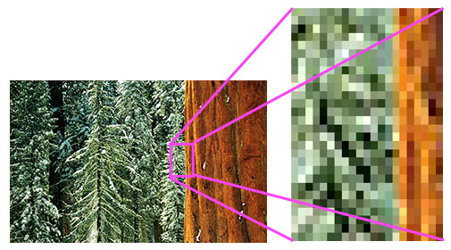
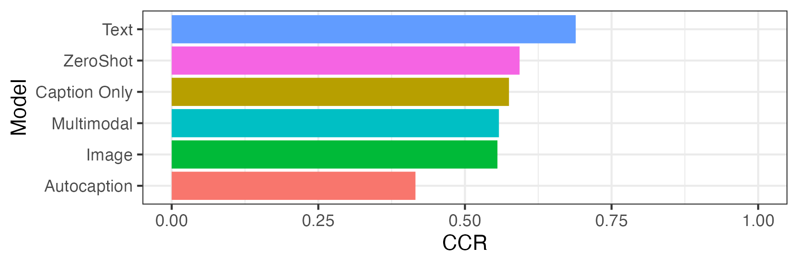
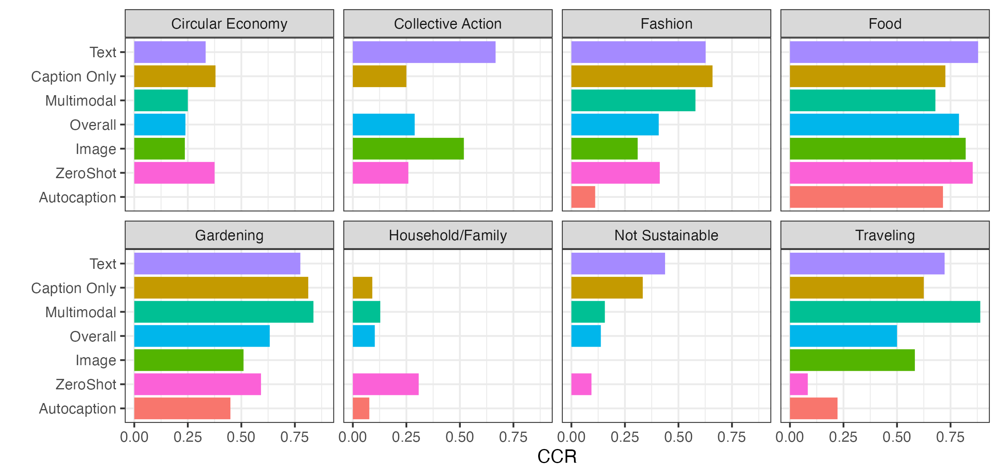
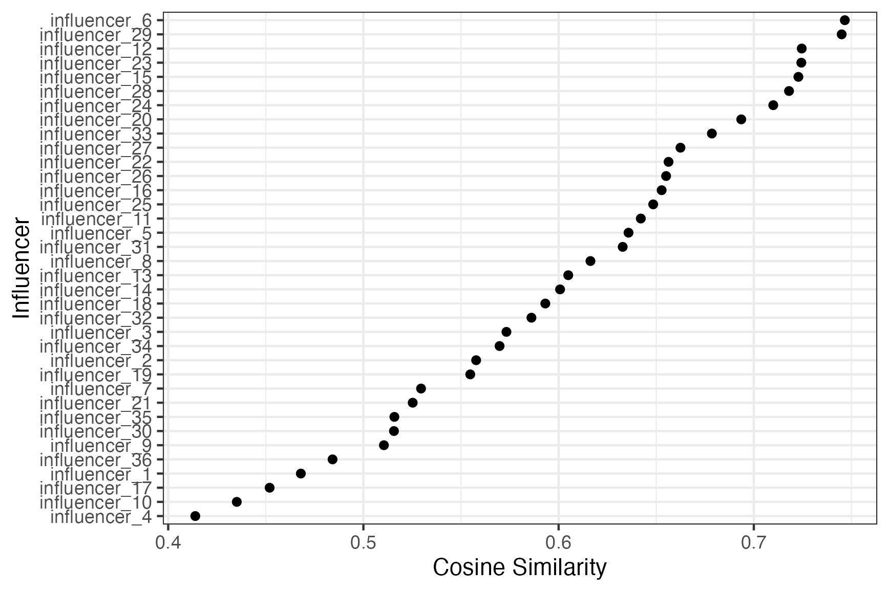
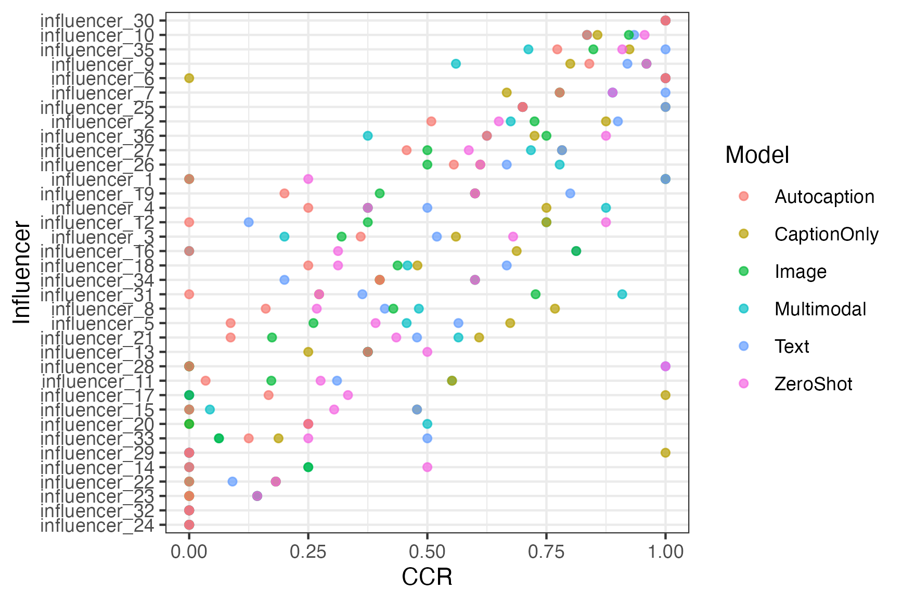

75th ANNUAL ICA CONFERENCE
Is a Picture Worth More than a Thousand Words?
Computational Analysis of Images and Texts
Justin Chun-ting Ho, A. Marthe Möller,
Joanna Strycharz, Rhianne W. Hoek
Automatic analysis of image, audio, and video content for a long time seemed nigh impossible.
---- Kroon et al. (2023)
Pixels

Credit: Julie Waterhouse Photography; Ultimate-Photo-Tips.com
Can unsupervised VLM-based approaches detect theoretically relevant themes depicted in images?
Data
- Instagram posts of 44 Dutch green influencer
- 283 posts, 794 images (with caption)
- Coded manually for the themes
Analysis
- Topic modelling with various approaches using
BERTopic and CLIP (zero-shot approach as baseline)
- How many themes can be detected?
- How accurate are these models?
Correct Classification Rate

What influences the performance?
Correct Classification Rate by Topic

Alignment between texts and images

Correct Classification Rate by Influencer

Takeaways
- Multimodal is not always benefitial
- Text can do a pretty good job in most cases
- Stylistic differences matter
Thank You!
Bluesky: @justinho.bsky.social
Github: justinchuntingho
Email: j.c.ho@uva.nl